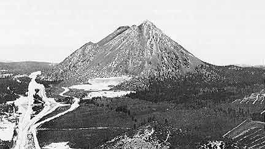
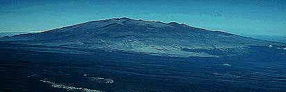
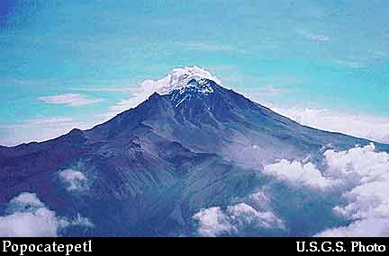
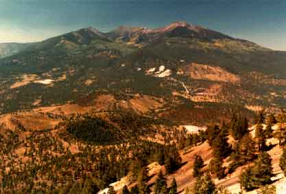

Lesson 29d Image Studio
For this lesson, Hit Me With a Shockwave, you will need to download 4 image files (shown below at 50% actual size). To download the images, try one of the methods below.

black_butte.jpg (17k)
|

mauna_kea.jpg (8k)
|

popo.jpg (11k) |

sfpeaks.jpg (14k) |
1. The Secret Menu
Look for the "secret" popup menu in your web browser. (Click and hold the mouse for Macintosh; click and hold the right mouse button for Windows and Unix)
- Click and hold the mouse on the image above to bring up the "secret" menu
- Select Save this Image as...
- When prompted, enter the names as listed above for each image file. (it may insert it for you)
- Save the file in the pictures folder/directory
2. Saving As Source
If you cannot find the secret menu, try this approach. Select the link below ("view the image") that links directly to the image. It will likely show the picture by itself in a separate web page or it may launch an external graphics program to display the image.
- If the image displays by itself in a web page then:
- Select Save As... from the File menu
- Select the option to save as SOURCE
- Enter the names as listed for each image file
- Save the file in the pictures folder/directory
- If the image displays in an external graphics program, then:
- Select Save As... from the File menu
- Look for an option to save as JPEG format
- Enter the names as listed for each image file
- Save the file in the pictures folder/directory
view the image of Black Butte
view the image of Mauna Kea
view the image of Popocatapetl
view the image of San Francisco Peaks
Writing HTML: Lesson 29d Image Studio
©1994-2002
Maricopa Center for Learning and Instruction (MCLI)
Maricopa Community Colleges
Questions? Comments? Visit our feedback center
URL: http://www.mcli.dist.maricopa.edu/tut/tut29dimg.html

This work is licensed under a Creative Commons Attribution-NonCommercial-NoDerivs 2.5 License.